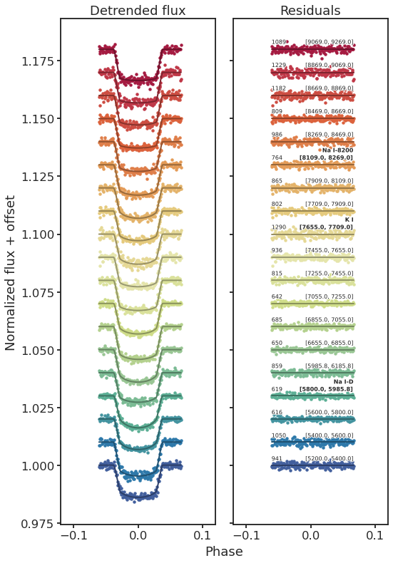
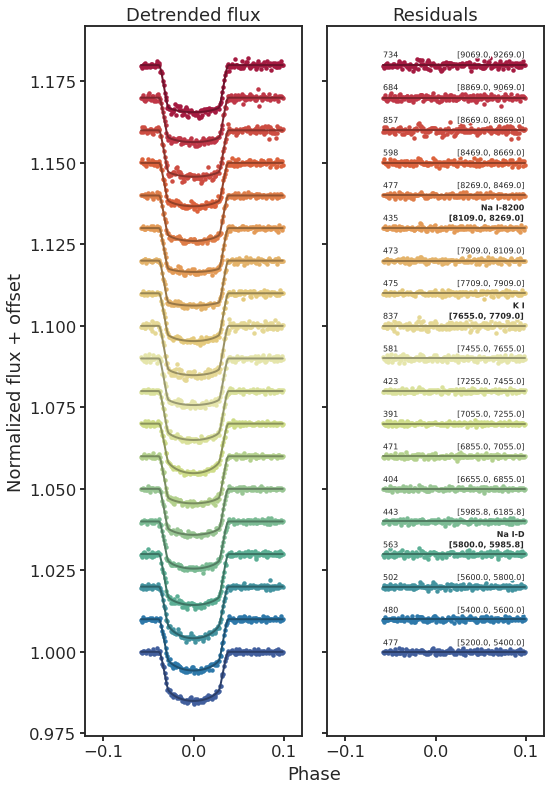
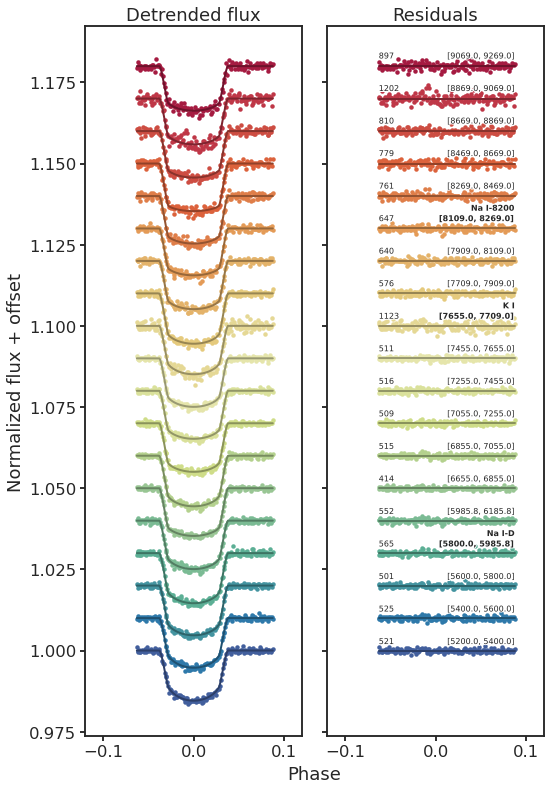
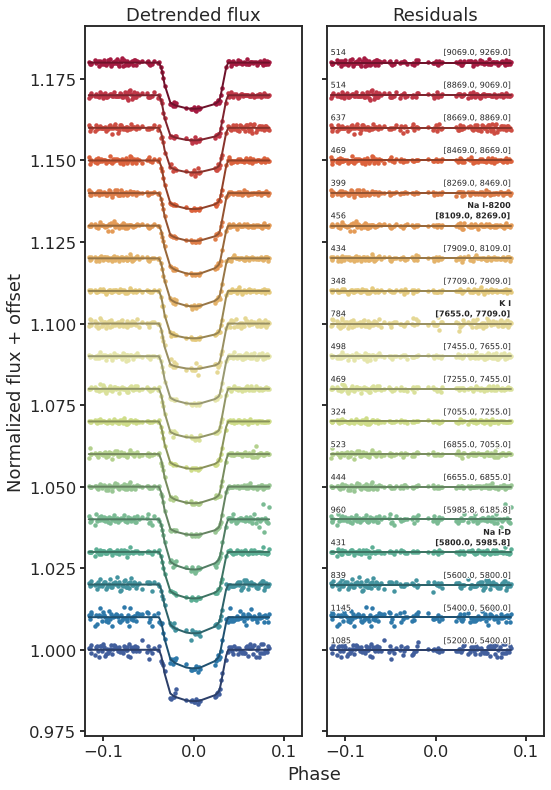

13. Detrended binned WLCs¶
13.1. Setup¶
%load_ext autoreload
%autoreload 2
import glob as glob
import matplotlib as mpl
import matplotlib.patheffects as PathEffects
import matplotlib.pyplot as plt
import matplotlib.transforms as transforms
import numpy as np
import pandas as pd
import seaborn as sns
import corner
import json
import pathlib
import pickle
import utils
import warnings
from astropy import constants as const
from astropy import units as uni
from astropy.io import ascii, fits
from astropy.time import Time
from mpl_toolkits.axes_grid1 import ImageGrid
# Default figure dimensions
FIG_WIDE = (11, 5)
FIG_LARGE = (8, 11)
# Figure style
sns.set(style="ticks", palette="colorblind", color_codes=True, context="talk")
params = utils.plot_params()
plt.rcParams.update(params)
13.2. Dowload data¶
Unzip this into a folder named data in the same level as this notebook
13.3. Plot¶
data_dir = "data/detrended_binned_lcs"
dirpaths = sorted(glob.glob(f"{data_dir}/hp*"))
dirpath_dict = {
f"Transit {i}": dirpath for (i, dirpath) in enumerate(dirpaths, start=1)
}
for title, GPT_dir in dirpath_dict.items():
wbin_paths = sorted(glob.glob(f"{GPT_dir}/wavelength/wbin*"), key=utils.wbin_num)
PCA_list = []
for wbin_path in wbin_paths:
PCA_paths = glob.glob(f"{wbin_path}/PCA*")
PCAs = [path.split("/")[-1] for path in PCA_paths]
PCA_list.append(PCAs)
common_PCAs = set(PCA_list[0])
for s in PCA_list[1:]:
common_PCAs.intersection_update(s)
PCA_max = max(common_PCAs, key=lambda s: int(s.split("_")[-1]))
PCA_num = int(PCA_max.split("_")[-1])
# print(f"max common PCA = {PCA_num}")
# Getting t0 from WLC data
fpath = f"{GPT_dir}/white-light/results.dat"
t0 = float(utils.get_result(fpath, key="t0", unc=False))
P = float(utils.get_result(fpath, key="P", unc=False))
# Get wavelength bins
fpath = f"{GPT_dir}/transpec.csv"
wbins = np.loadtxt(fpath, skiprows=1, usecols=[0, 1], delimiter=",")
# Glob doesn't automatically sort, but instead follows the local filesystem"s
# rules, which can be very system dependent.
# To avoid potential cross-platform issues, I just sort based on an explicit
# rule that is passed to `sorted`. In this case, the rule is:
# sort based on the <num> part in wbin<num> of each file path.
dirpath = f"{GPT_dir}/wavelength"
detrended_files = f"{dirpath}/wbin*/PCA_{PCA_num}/detrended_lc.dat"
fpaths = sorted(glob.glob(detrended_files), key=utils.wbin_num)
# Store final data in <# of wavelength bins> x <length of timeseries> arrays
detfluxes, models, resids = [], [], []
for fpath in fpaths:
time, detflux, detfluxerr, model = np.loadtxt(fpath, unpack=True)
detfluxes.append(detflux)
models.append(model)
resids.append(detflux - model + 1)
detfluxes = np.array(detfluxes).T
models = np.array(models).T
resids = np.array(resids).T
phase = utils.get_phases(time, P, t0)
time_rel = phase
###################################
# Plot detrended flux and residuals
###################################
# Plot configs
N = detfluxes.shape[1] # Number of wavelength bins
colors = np.array(sns.color_palette("Spectral_r", N))
offset = 0.01 # Spacing betweem binned lcs
# Optional bins to highlight
species = {
"Na I-D": 5892.9,
# "Hα":6564.6,
"K I": 7682.0,
"Na I-8200": 8189.0,
}
scatter_plot_kwargs = {
"marker": ".",
"lw": 0,
"mew": 0, # Make non-zero to show marker outlines
}
annotate_kwargs = {
"fontsize": 8,
"horizontalalignment": "right",
"path_effects": [PathEffects.withStroke(linewidth=2, foreground="w")],
}
annotate_rms_kwargs = {
"fontsize": 8,
"horizontalalignment": "left",
"path_effects": [PathEffects.withStroke(linewidth=2, foreground="w")],
}
fig, axes = plt.subplots(1, 2, figsize=(FIG_LARGE), sharex=True, sharey=True)
ax_left, ax_right = axes.flatten()
# Detrended flux
ax_left.set_title("Detrended flux")
p_det = utils.plot_binned(
ax_left,
time_rel,
detfluxes,
wbins,
offset,
colors,
plot_kwargs=scatter_plot_kwargs,
models=models,
)
# Residual flux
ax_right.set_title("Residuals")
baselines = np.ones_like(resids)
p_res = utils.plot_binned(
ax_right,
time_rel,
resids,
wbins,
offset,
colors,
plot_kwargs=scatter_plot_kwargs,
models=baselines,
annotate=True,
annotate_kwargs=annotate_kwargs,
annotate_rms_kwargs=annotate_rms_kwargs,
species=species,
)
# Save
ax_left.set_ylabel("Normalized flux + offset")
fig.text(0.52, 0, "Phase", ha="left")
ax_left.set_xlim(-0.12, 0.12)
fig.tight_layout()
fig.set_size_inches(FIG_LARGE)
title = "detrended_binned_lcs_" + title.lower().replace(" ", "_")
utils.savefig(f"../paper/figures/detrended_binned_lcs/{title}.pdf")



